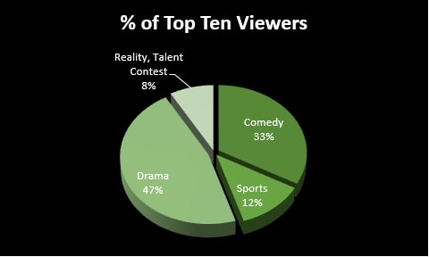
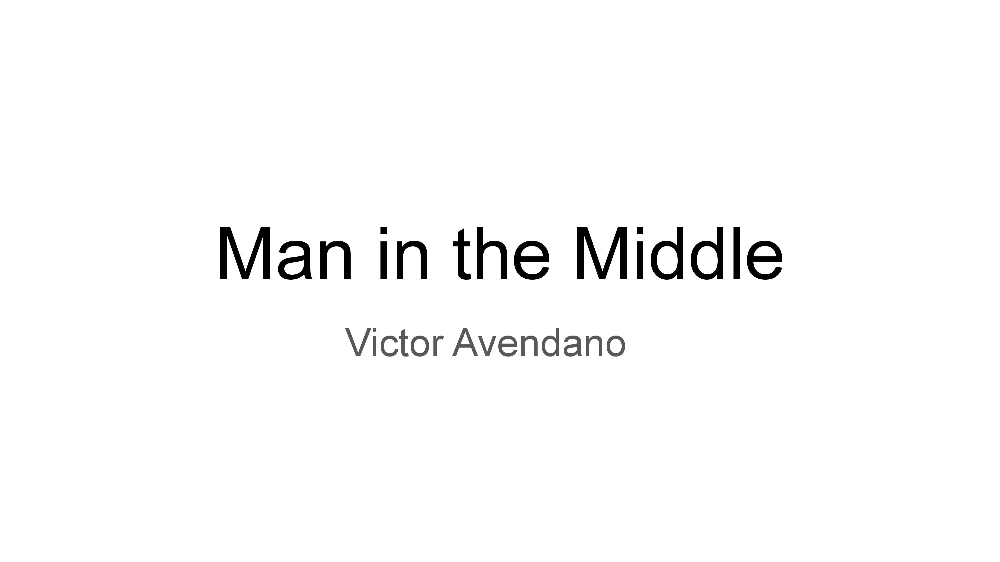
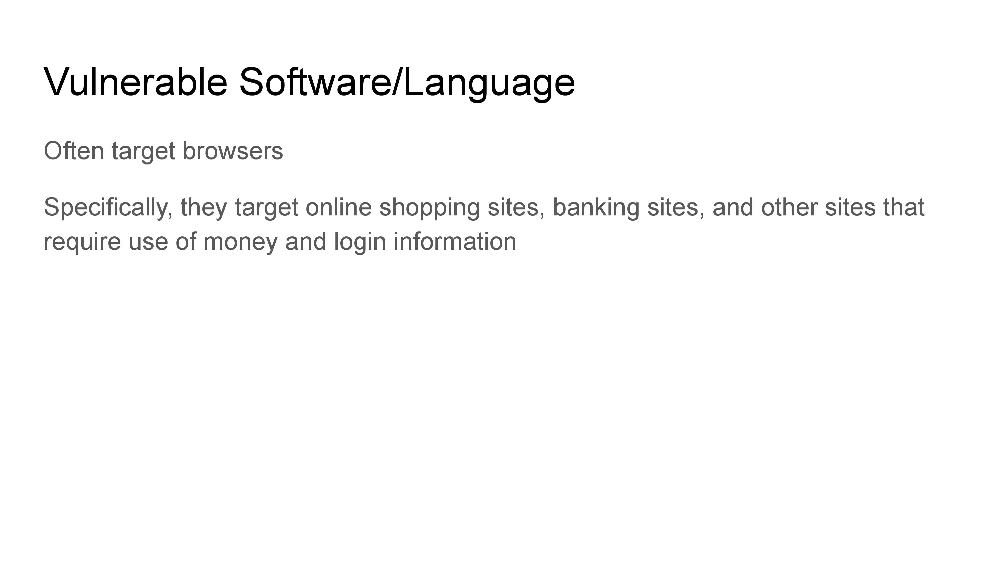
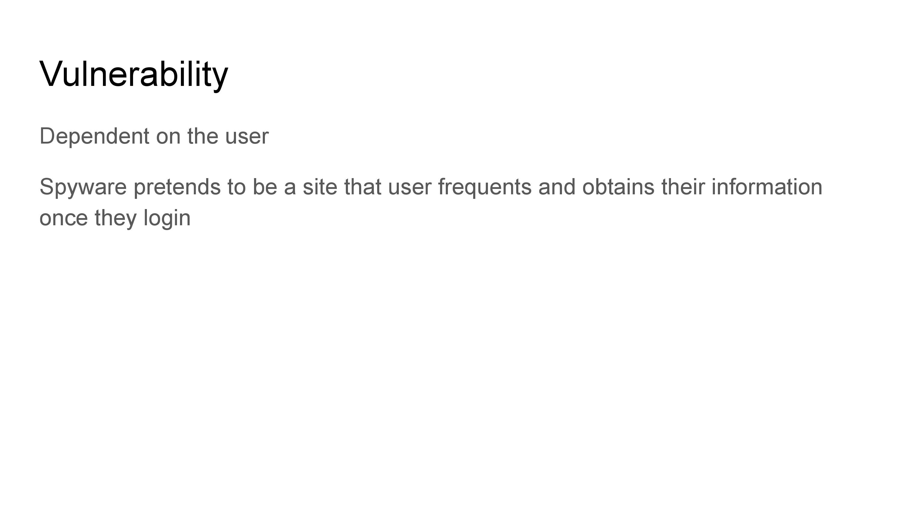
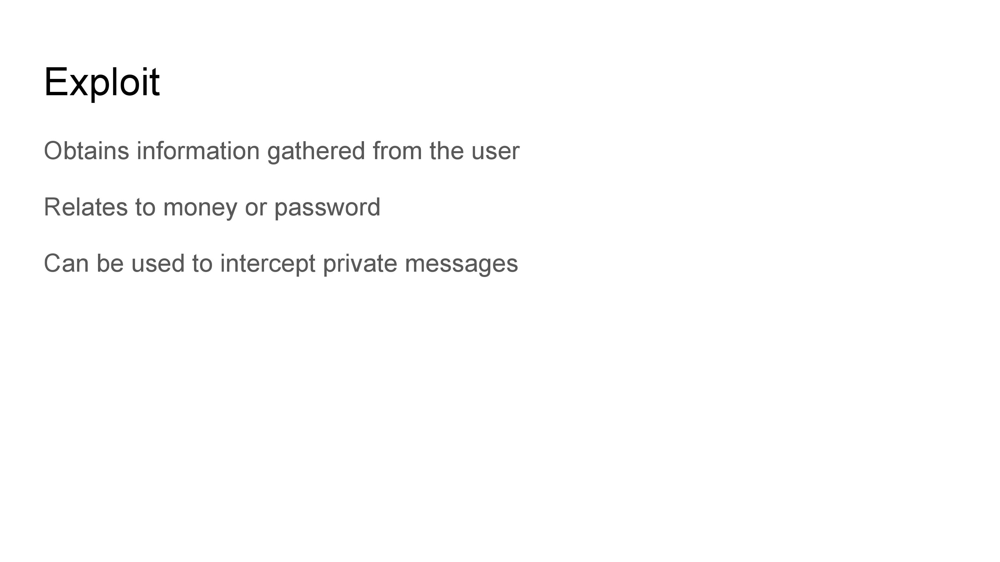
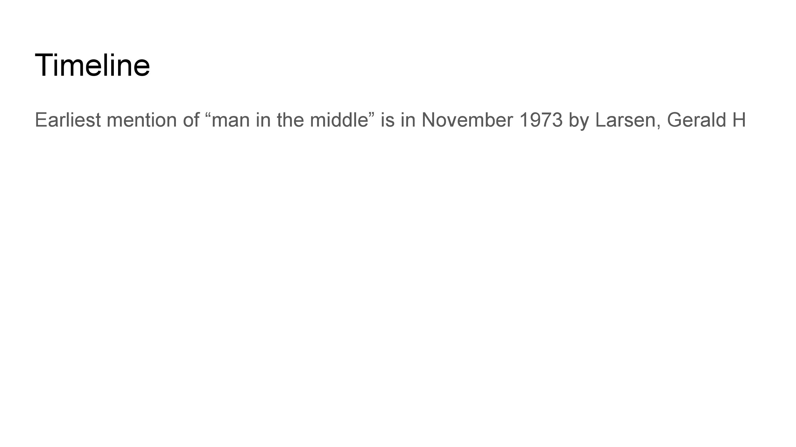
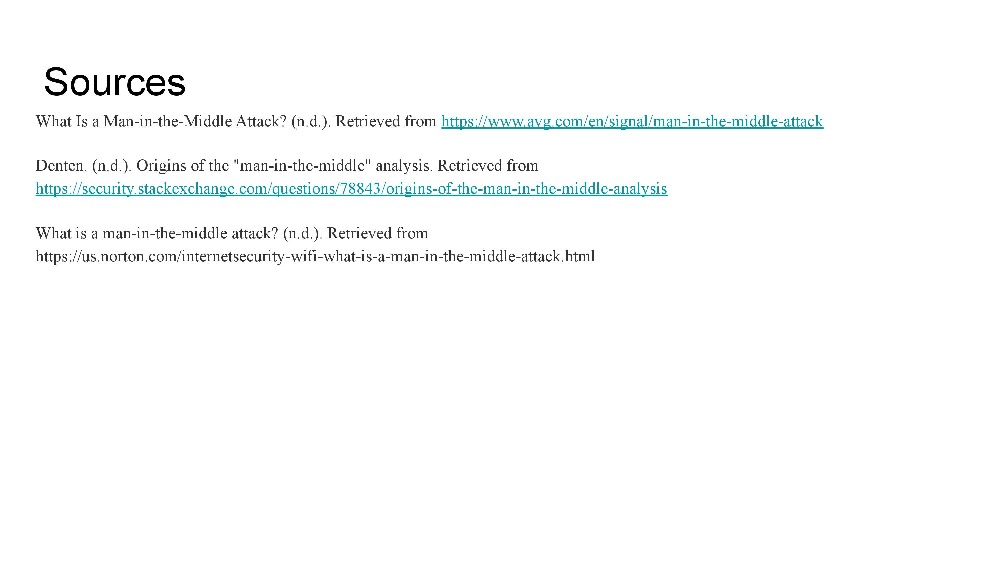
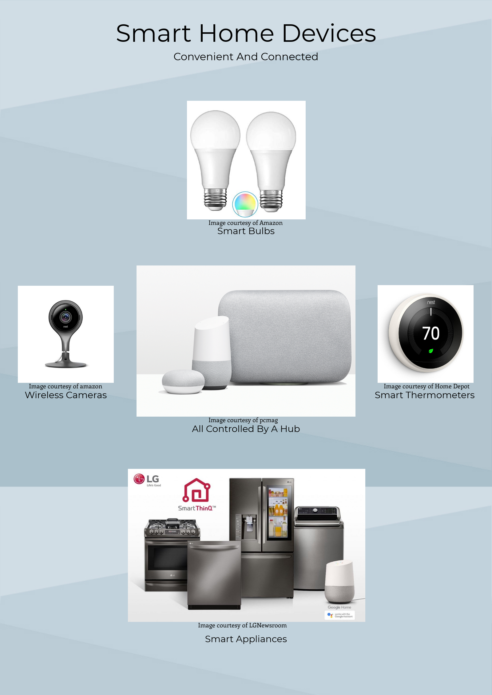

The following items are games/projects I worked on over the course of the year.
Here is a link to the game on Scratch
Here is a video that showcases our rather simplistic translator
Your browser doesn't support HTML5 video. Here is a link to the video instead.
The translator program we made doesn't server any functional purpose and was made purely for entertainment. Users have options of making their words into internet jokes or pig latin. For example, the blood function refers to the gang and essentially replaces c's and k's with b's. The uwu function replaces r's and l's with w's. The piglatin fucntion translates word into pig latin.
The main issue we ran into was that Pig Latin would only take the first letter of a word and put in back with "ay" added. This was fine for most words but when it came to words like "shutter", the program would not give the accurate depiction of the word in Pig Latin. This was fixed by having the program check if there was a vowel as the third character. This would enable the first to characters in a word like "stutter" to move to the back and become accurately translated into Pig Latin.
The following item is the infographic I created with my partner.
This project was one based on gathering data and putting it in a way that was easily understood. The data that my partner and I did focused on the most viewed genres of television in the past year. As it is visible, drama television shows are the most viewed by the population. This project was meant to teach us how to create an image that gave a lot of information without the need of too many words. This was useful as it taught us the basic premise of an infographic.
This project was based on simulating the spread of AIDs if everyone was less committed to relationships and refused protection. It’s a less realistic interpretation of our reality but it came from the question of “What would happen..”. Well, what ended up happening was that everyone got infected with the AIDs virus. After running this a couple of times, we saw that on one instance, only one person managed to not get infected. If this was the case, then that individual had an immunity. While everything else was silly, that fact alone could mean that there could be someone who is immune to the virus right now or in the future.
     The previous images are slides from a presentation I worked on centered on "Man in the Middle" attacks. Man in the middle attacks are essentially attacks in which there's someone who intercepts information that is sent from one person to another. It's through this method that hackers can receive all sorts of financial and personal information. The presentation goes over several points of information that refer to how users are exploited and explains the vulnerability of said users.
This the application I submitted to CollegeBoard. If I'm honest, I am not happy or satisfied with what I did. For a little background information, I was working on developing a security app that code host several users. As a result, I wanted to create a username and password system in order to enhance security. Over the course of the month, I ran into trouble creating an application that had a functional security issue. So, during the course of the last week that we could work in class, I completely scrapped the idea and went through another design process. I decided to create an app that wouldn't take too long and would be somewhat fun. So, I created "TimeWaster" which is an app that is meant to waste the user's time. As the user explores the app, they have the ability to gather clues as to figure out what to do in the "secret screen". Once they have it figured out, they are led to believe that there is more to the app than there actually is. Unfortunately it's just a waste of time. So, the development of this app really taught me that sometimes it's easier to scrap the idea early if it isn't working out.
This is the second infographic I ever created while inside the classroom, and, if I'm honest, it came out so much better than my first one. Not only is this one much better organized, condensed, and proffesional, but it also has an overall clean look. The pictures match in terms of color and the way the pictures are lined up around a central picture looks good. So, this picture really refers the technological innovation of smart home devices. These devices aim to provide a better experience to the user by making life more convenient. For example, you can use a Google Home or Alexa and tell it to "turn off the lights" or "turn on the air conditioning". As demonstrated by the organization of the pictures, there is a central hub that every device connects to in order to recieve orders from the user. These devices range in size, function, and value but all mean to improve user experience at home.